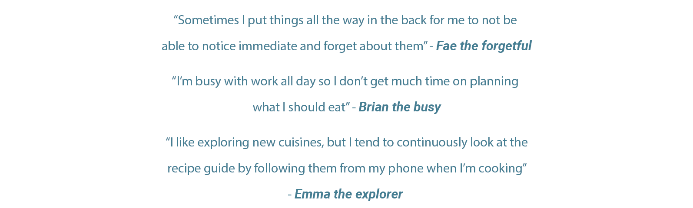
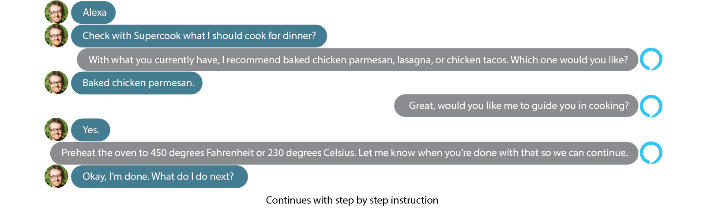
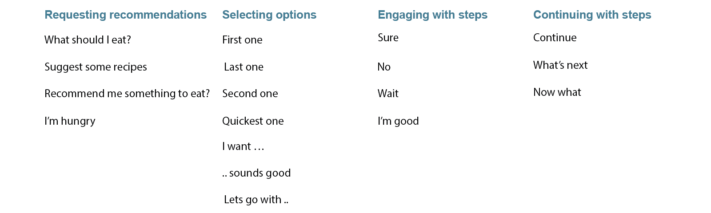
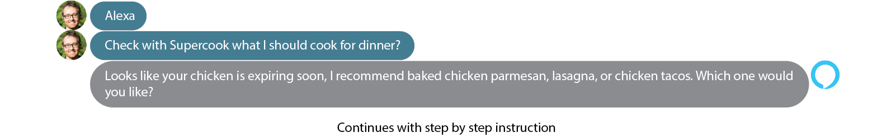
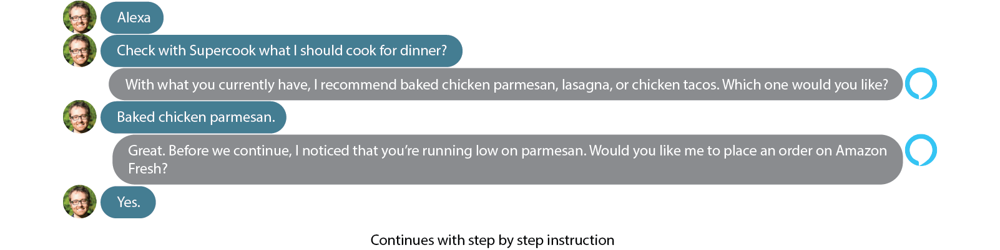

Problem: Finding recipes with existing ingredients in your fridge/pantry is hard, especially when it comes to the correct number of quantity available of each ingredient. Reducing food wastage is an issue that many busy working professionals face.
Solution: Supercook is a website where you can add the ingredients you have available and the application will suggest recipes based on those ingredients. Our solution is utilizing Supercook’s engine, with Alexa, and your Whole foods/Amazon account, as a natural system to deliver you step by step instructions for sustainable recipes.
My Contribution: As this was just a design challenge to explore the basics of VUI, I led the problem discovery and assisted with the design of the voice interaction flow.
To get an overview of people’s experiences, we investigated the needs of users and identifying their problems. We conducted a few informal interviews, and immediately noticed that people are either forgetful when it comes to what ingredients they have in their stock, too busy to think about meal preparation and want something quick, or wanted the ability to explore new recipes within their means.

We decided to select voice as a method of communicating as it’s a natural way of navigating when multitasking in real life. This way users don’t need to learn how to use a new technical system. More importantly, VUI is hands free and doesn’t require to physically interact with a device, allowing the users not to divert their hands and eyes when cooking.
We pursued Amazon's VUI Design guidelines. For every one of the user's reactions, we went back to the design guide to ensure that the conversation sounded natural and that it gave enough information to effectively draw successful instructions. The system is initialized by utilizing the information from the user’s Whole foods/Amazon account, where their data is synced with Supercook in regard to their purchases. Once the data is automatically entered, users can update their information by interacting through Alexa.
The base engages the users with questions by utilizing Nelson Cowan’s working memory capacity principle instead of overloading the user with information. The system follows the user with prompts through simple binary responses.

When then started to add onto our base path by exploring how users might take alternative routes when compared to our original flow. We noticed that users would sometimes express the same idea in a different method without using the exact words that we utilized in our base path, and that sometimes users wouldn't strictly follow the path, by either asking questions or taking an unexpected route.
We developed a synonymous model by role playing with various potential users in order to get possible responses that one might explore. These responses can be attached to our base path if a user responds differently.

Some users did not firmly adhere to the original path, so we allowed the flexibility to divert while maintaining the context necessary within the conversation.
In addition to our base path, we iterated to add more functionality and utility towards our application. Utilizing the information available towards a user’s purchases from their Whole foods/Amazon account, we can remind them on when their produce is about to expire.

As the system can keep track of the number of ingredients you have available, it can also remind you to order more.

As this was a design exercise in order for us to challenge ourselves, we found common underlying design principles as one would see graphically. Despite the fact that we tested our prototype to users in order to assist us with refining our design, our paths still need more extensive user testing in order to validate if the system does in fact help users solve their issues within an assortment of users in various settings. There were certain functions, such as dietary restrictions, that users wanted to explore, but couldn’t due to the limited capacity of Supercook’s search engine.
Thank you for taking the time to read through this case study! As a token of my appreciation, here's a little reward :)